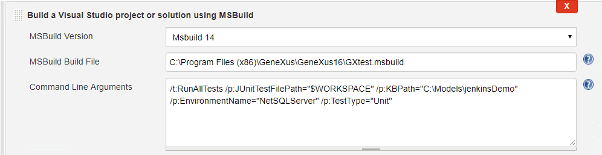
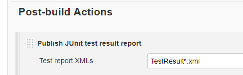
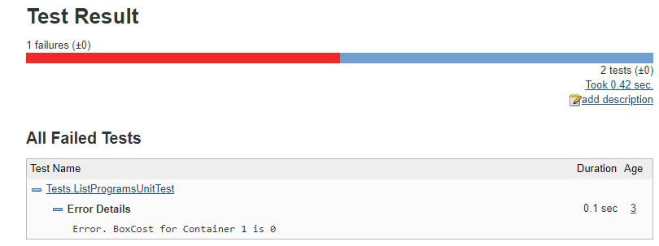
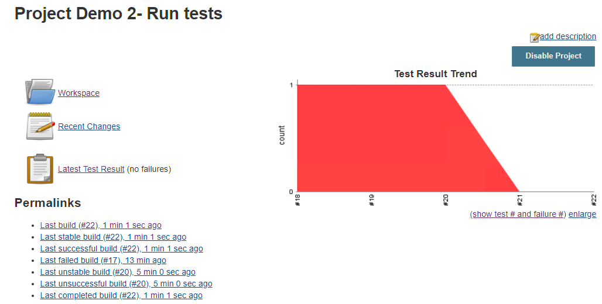

Get test case execution results in JUnit FormatRunning test cases in batch mode is achieved by using MSBuild test tasks. This is useful in CI Tools like Jenkins since they can read these XML files and show test case reports containing failed assertions. Anytime you run tests (unit or UI) using MSBuild tasks, you can add an extra task to see test results in XML JUnit format:
<JUnitExportTests JUnitTestFilePath="$(JUnitTestFilePath)">
<Output TaskParameter="JUnitTestFilePath" PropertyName="JUnitTestFilePathOutput" />
</JUnitExportTests>
This will create an XML file with the name TestResultJUnityyyy-dd-mm--hh-mm-ss.xml containing test results. Note: This task needs to run over a previously opened KB after running test cases. Example using JenkinsThis example uses GXtest.msbuild file (usually located on GeneXus IDE root folder). Step 1) Run unit tests stepAdd JUnitTestFilePath parameter in MSBuild:  By default, if a test fails, the RunTests task will be marked as failed as well. To prevent be marked as failed and process test results, the additional parameter /p:AllowFailedTests="true" must be set on this step. Make sure that the Jenkins' user has writing privileges over the folder you want to store the test results. Step 2) Add reporting in a "post-build" eventUse the JUnit plugin pointing to the previously used folder (in the example it is using WORKSPACE Jenkins folder):  ResultsYou will start viewing Test results :  and trends... 
|
| Backlinks | ||
| Toc:GXtest v4 | GXtest v4 Licensing | GXtest v4 Licensing (GeneXus 17 upgrade 2 and prior) |